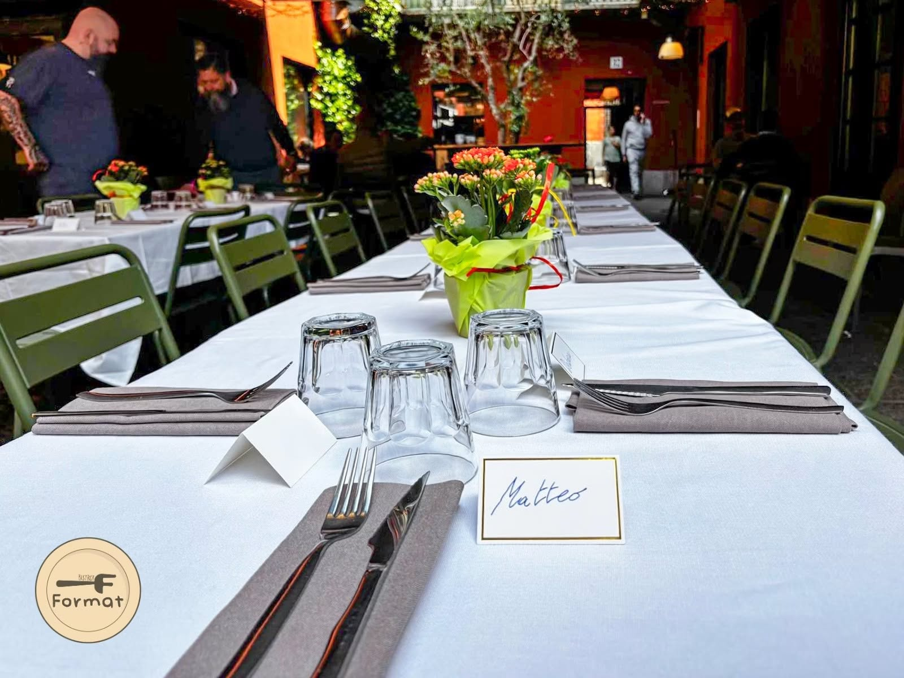
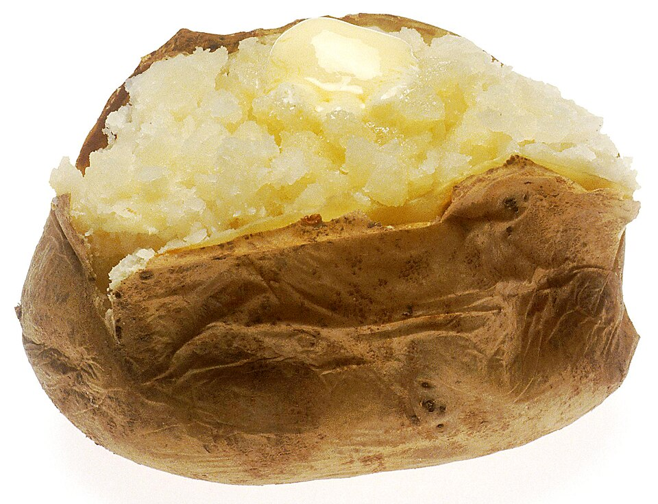
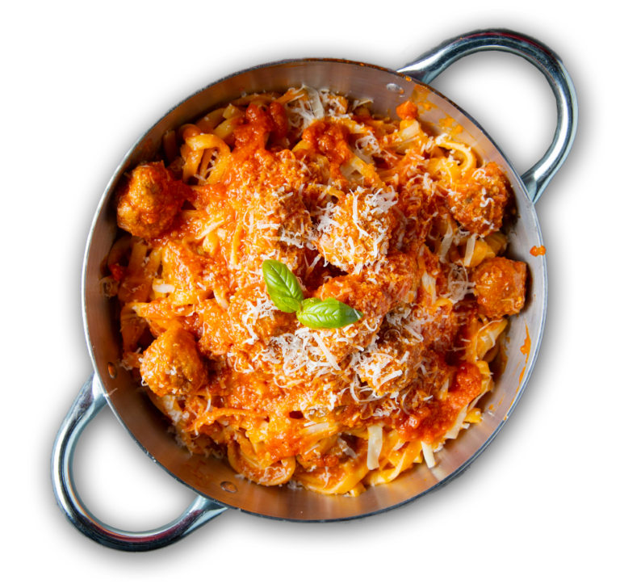
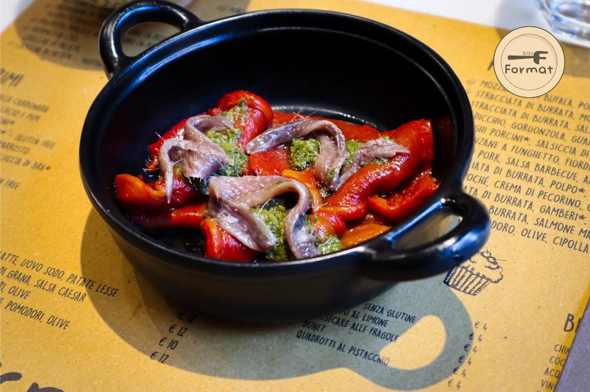
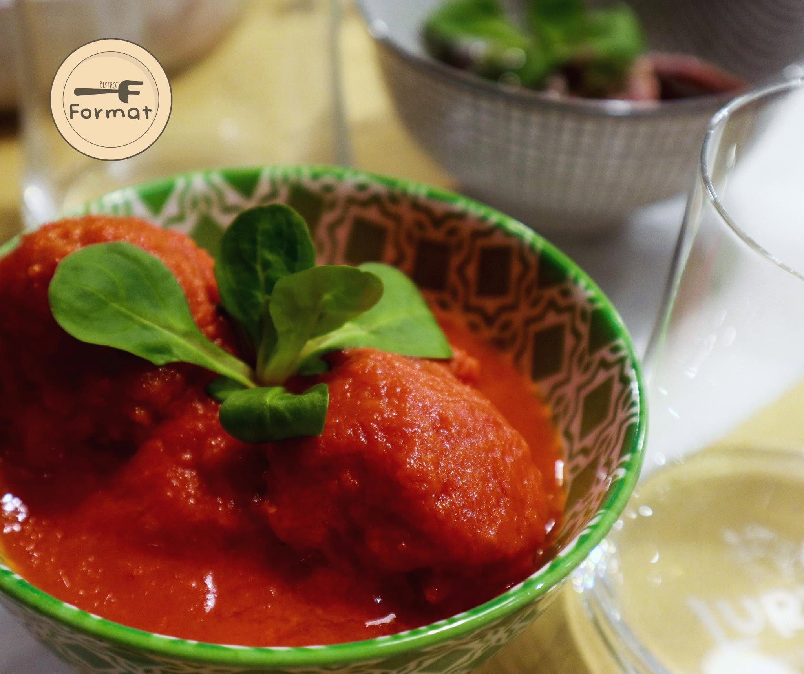
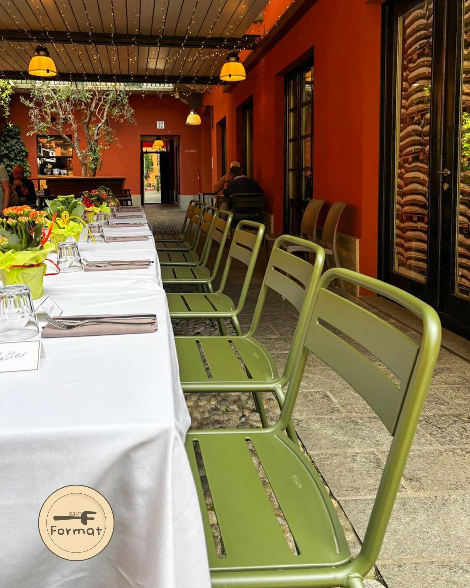
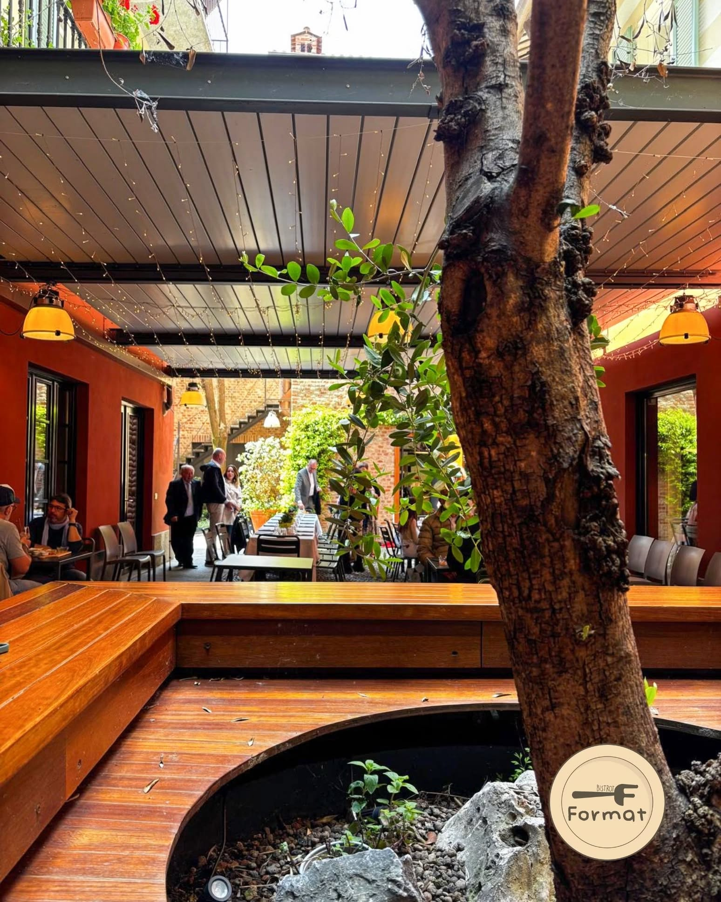
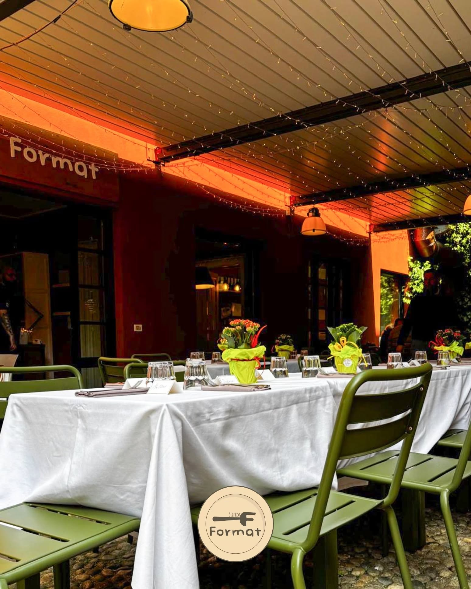
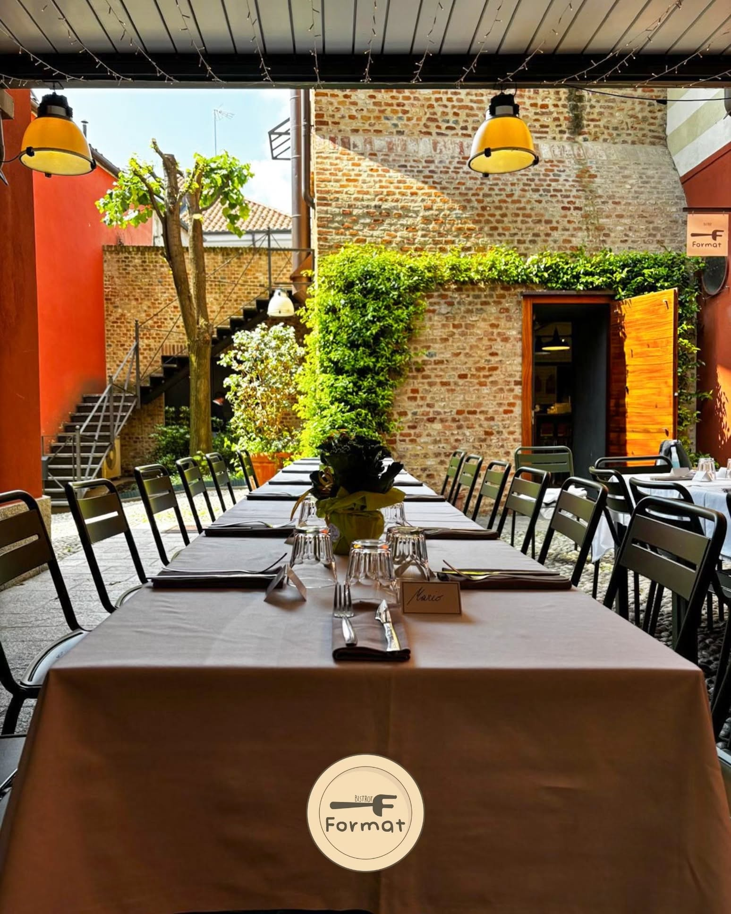
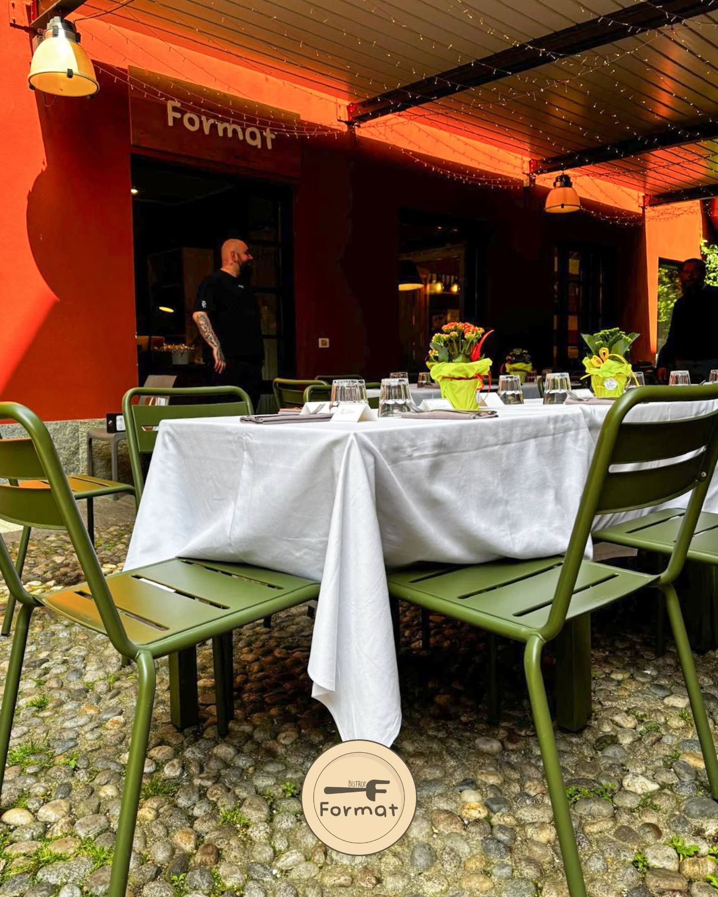

Primi per scelta.
Patate ripiene, pasta fresca e antipasti da condividere, nel cuore dello storico chiostro di Via Vittorio Emanuele II. Anche da asporto e a domicilio.
Una settimana, quattro promo.
Dal lunedì al giovedì la cena al Format prende un altro gusto. Il giorno di oggi è evidenziato.
su tutti i primi
su tutto, esclusi bevande e dessert
su tutte le patate
Giropasta: tutta la pasta che vuoi, finché non dici basta
Promozioni valide a cena, non a pranzo e nei giorni festivi.
Scegli la tua patata.
Abbiamo cercato a lungo la patata migliore per le nostre ricette. Toccane una e guarda come la riempiamo.


I primi.
Pasta fresca o trafilata al bronzo dopo lente essiccazioni: perfetta per la pausa pranzo dall'ufficio o per una cena informale.
- Paccheri alla carbonara12 €
- Tajarin ai porcini13 €
- Gnocchi con provola, salsiccia e friarielli13 €
- Risotto alla zucca, toma e salsiccia di BraGLUTEN FREE13 €
- Agnolotti di carne al sugo d'arrosto12 €
- Paccheri all'amatriciana11 €
- Spaghettoni cacio e pepe12 €
Tajarin e gnocchi anche in versione gluten free.
Gli antipasti.
Molti si possono ordinare in mezza porzione: ideali da mettere al centro del tavolo e assaggiare insieme.
Abbiamo voluto una proposta in gran parte senza glutine: grazie alla collaborazione con AIC Piemonte, chi è intollerante può mangiare fuori casa in tutta sicurezza.


Un dehor nel chiostro.
Al numero 32 di Via Vittorio Emanuele II si entra in un chiostro storico: muri color terracotta, ulivi, lucine sotto la pergola e lunghe tavolate per le feste.





Quando siamo aperti
- Lunedì12–14:30 · 19–23
- Martedì12–14:30 · 19–23
- Mercoledì12–14:30 · 19–23
- Giovedì12–14:30 · 19–23
- Venerdì12–14:30 · 19–23
- Sabato19–23
- Domenicachiuso
Prenota o ordina
- Indirizzo
- Via Vittorio Emanuele II 32, Chieri (TO)
- Telefono
- 011 904 4547
- info@formatchieri.it
- Asporto e domicilio
- Chiamaci e passa a ritirare, oppure te lo portiamo noi.